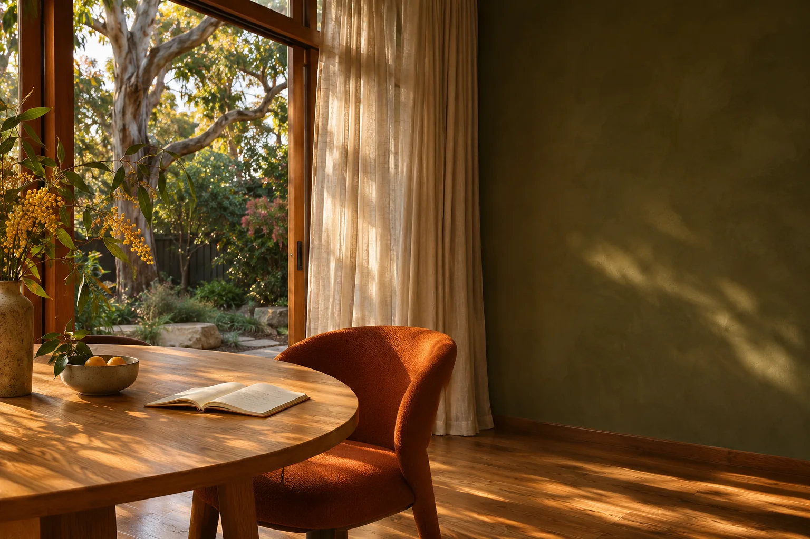

nemo.Your own AI.
One guided setup.
A look inside the Windows preview, from setup to your first conversation.
Public downloads are being prepared.
Current testing is for invited adults 18+.
An eligible ChatGPT subscription is required.

- 01
Open Nemo.
Make your space. Prepare the included assistant.
What should
Your first name
we call you?SamNext: prepare the bundled assistant.
- 02
Connect your AI.
Use an eligible ChatGPT subscription. No API key or local model to set up.
Your ChatGPT.
Here in Nemo.NemoBrowserNemoSign in in your browser, then return to Nemo.
- 03
Start a conversation.
Chat on your computer. Return to your saved history.
Help me plan my first camping trip.
Let’s start with where you’d like to go and who’s coming.
Ask Nemo anything…Your conversation is saved in History.
Setup illustrations, using fictional data.
This walkthrough shows the Windows preview.
The phone connection still needs release verification.
What do I need?
The first version uses Windows and an eligible ChatGPT subscription. Local AI models are not included. Your plan’s usage limits and credit settings apply. Public distribution still needs release verification.
What about calendar, email and memory?
Calendar and Gmail are optional connections. Hermes memory works automatically; saved notes stay on your PC and relevant notes go to ChatGPT. Local AI models remain deferred.
How will my phone connect?
Once the hosted connection is configured and verified, Nemo can issue a personal invitation. Phone access needs the home computer awake and online.
Does everything stay on my computer?
Your chats and personal data are hosted on your computer. The connected AI provider receives the conversation context and permitted tool results needed to answer. Relevant saved notes also accompany ChatGPT requests.